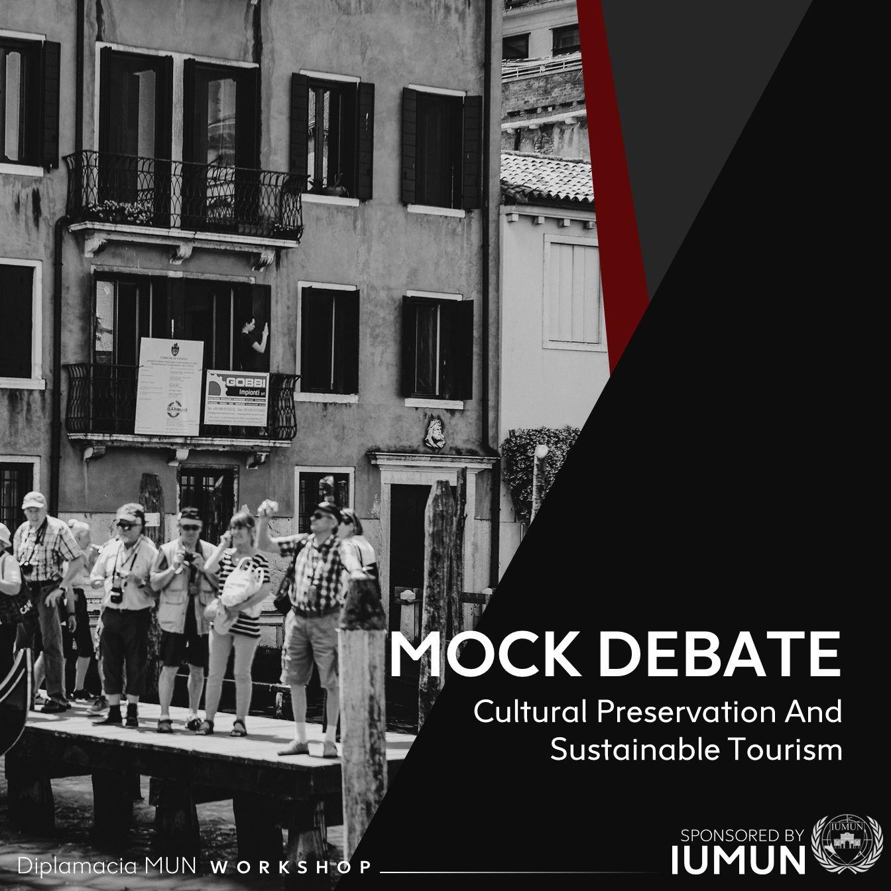

<section id="mock-debate" class="text-center">
    <div class="row pt-5">
        
        <p class="col-md-9 px-5 my-auto">
            The GA-3 SOCHUM (Social, Humanitarian, and Cultural) Committee is a vital part of the United Nations General Assembly's core committees, with its main focus on matters related to social issues, humanitarian concerns, and cultural diversity. This involves aspects such as human rights, social development, and preserving cultural heritage. As a platform, it facilitates member states in collaborating, discussing, and creating recommendations across various topics, all aimed at promoting global well-being and progress.
            <br><br>
            Our agenda item, "Cultural Preservation and Sustainable Tourism," centers on a critical dual goal: safeguarding cultural heritage and traditions while promoting responsible and sustainable approaches to tourism. Hence, a key aspect of our committee's mission is to explore effective strategies that enable nations to strike a harmonious balance between promoting tourism for economic growth and ensuring the preservation and reverence of the cultural heritage inherent in these destinations.
            <br><br>
            Given our limited session time, it's important to note that our focus will be on crafting a concise resolution comprising three clauses. Each clause will revolve around distinct methods for achieving Cultural Preservation and Sustainable Tourism. This approach will allow us to efficiently address the intricacies of the agenda and ensure that our efforts contribute meaningfully.
        </p>
        <button type="button" class="btn mx-auto col-md-2 col-sm-4 mt-5 btn-warning" style="background-color: #5c0808 !important; border: #5c0808 !important">
            <a class="p-0" href="../../../assets/pdf/study-guide.pdf" download="study-guide.pdf" style="color: #ffffff; font-weight: bold; text-decoration: none;">Download Study Guide</a>
        </button>
        <!-- <pdf-viewer class="col-md-12 mt-5 mx-auto" [src]="pdfSrc" [render-text]="true" [original-size]="false" style="width: 1000px; height: 500px"></pdf-viewer> -->
    </div>
</section>